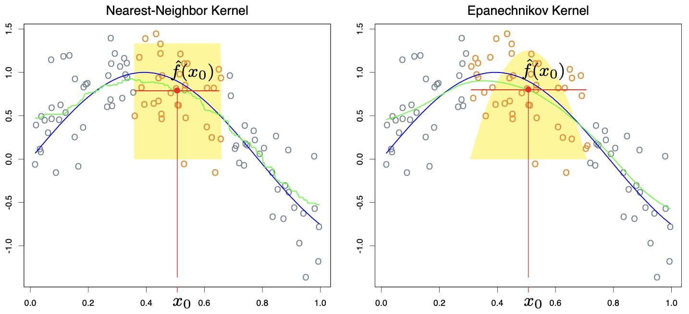
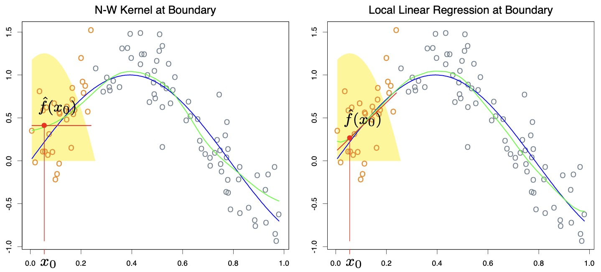
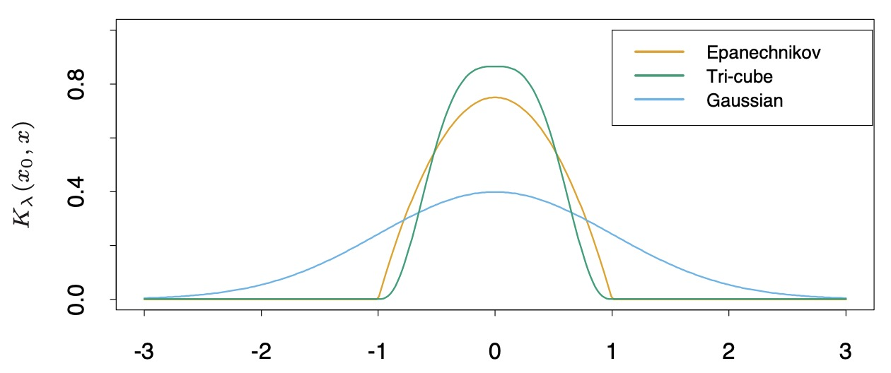

ESL 6: Kernel Smoothing Methods
本章我们介绍 核平滑方法。它仅利用目标点 \(x_0\) 周围的观测点来拟合模型 \(f(X)\)，得到 \(\hat{f}(X)\)。相较于最近邻法，它所得到的 \(\hat{f}(X)\) 是平滑 (smooth) 后的。
它平滑曲线的原理是利用一个核函数 \(K_\lambda (x_0, x_i)\) 根据目标点 \(x_0\) 和周围点 \(x_i\) 的距离赋予权重。
这一类方法几乎不需要训练，参数也很简单，只有一个超参数 \(\lambda\)，用来设置“周围”的具体范围。他们也被称为 "memory-based" 方法，其模型就是所有训练样本本身，拟合实时进行。因此，对于某些要求运算速度，或者存储有限的场合，这类方法并不适用。
值得注意的是，核平滑方法 和 核方法 是不同的概念。核方法 会在高维特征空间计算内积，用于正则化的非线性建模。
6.1 One-Dimensional Kernel Smoothers
相对于最近邻法，核平滑法对目标点附近选取的样本点设置了 根据距离衰减的权重，再进行加权平均。这样做的最大好处是使曲线更加平滑了（但是不一定可导，见文末 exercise）
样本点 \(x\) 的权重函数（也称为核函数）定义为其与目标点 \(x_0\) 距离相关的函数：
其中 \(h_\lambda(x_0)\) 表示选取窗口的大小可以根据目标点的取值变化。

可以看出，右图使用核函数平滑后，相比左图的最近邻法获得的估计值更为平滑。
6.1.1 Local Linear Regression
我们通过引入核函数解决了平滑性问题，但是，我们发现在临近边界的地方，曲线出现了较大的 bias，这是由于边界区域样本点分布不均匀。
我们可以通过 局部线性回归 解决这个问题。它在 每个 目标点 \(x_0\) 求解一个 最小二乘 问题：
即，对于每个目标点周围选取的样本点，用线性函数去拟合，得到线性方程：
再代入 \(x_0\) 得到估计值。该方法可以 除去 1 阶的 bias，只保留 2 阶及更高阶的 bias。
对于某一个目标点 \(x_0\)，假设其周围选取了 \(N\) 个样本点，其估计结果可以写成矩阵形式：
其中 \(b(x_0)^T = (1, x_0)\)，矩阵：
其效果如下图所示，可以看出在定义域边缘位置，使用局部线性回归（右图）拟合效果更好。

6.2 Selecting the Width of the Kernel
几种常用的 kernel:

对于 Epanechnikov 和 tri-cube kernel，\(\lambda\) 是“周围”的半径。对于 Gaussian kernel，\(\lambda\) 是其标准差 \(\sigma\)。
选取 \(\lambda\) 实际上是 bias-variance 的 tradeoff。当选取窗口很小时，由于采用的样本点较少，得到的目标点的估计值 variance 会很大。但是同时，由于选取的点都是离目标点最近的点，它的 bias 很小。
6.3 Multi-dimensional Local Regression
我们可以自然地将局部线性回归扩展到多维，用于拟合一个超平面。
当维度 \(p = 2\)，阶次 \(d = 1\) 时，我们有：
当维度 \(p = 2\)，阶次 \(d = 2\) 时，我们有：
需要求解的优化问题变为：
拟合的函数为 \(\hat{f}(x_0) = b(x_0)^T \hat{\beta}(x_0)\)。
维度变大时，由于边界上的点占总体样本的比例更大（越来越趋近于 100%），在边界上很难保持一个好的 bias-variance tradeoff。因此，局部线性回归在 3 维以上的情形时对边界 bias 的修正作用不佳。
Exercises
Show that the Nadaraya-Watson kernel smooth with fixed metric bandwidth \(\lambda\) and a Gaussian kernel is differentiable. What can be said for the Epanechnikov kernel? What can be said for the Epanechnikov kernel with adaptive nearest-neighbor bandwidth \(\lambda(x_0)\)?
Nadaraya-Watson 定义的估计值为：
当我们选择高斯核时：
无论 \(x_0\) 如何选取，高斯核函数始终可导。因此 \(\hat{f}(x_0)\) 也始终可导。
而对于 Epanechnikov 核：
由于 Epanechnikov 核函数是一个分段函数，虽然连续但是不可导，因此 \(\hat{f}(x_0)\) 也不可导。